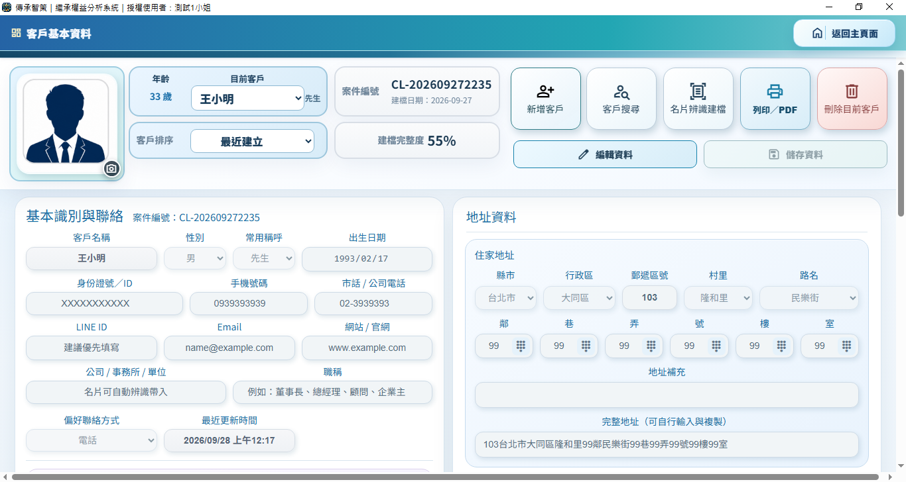
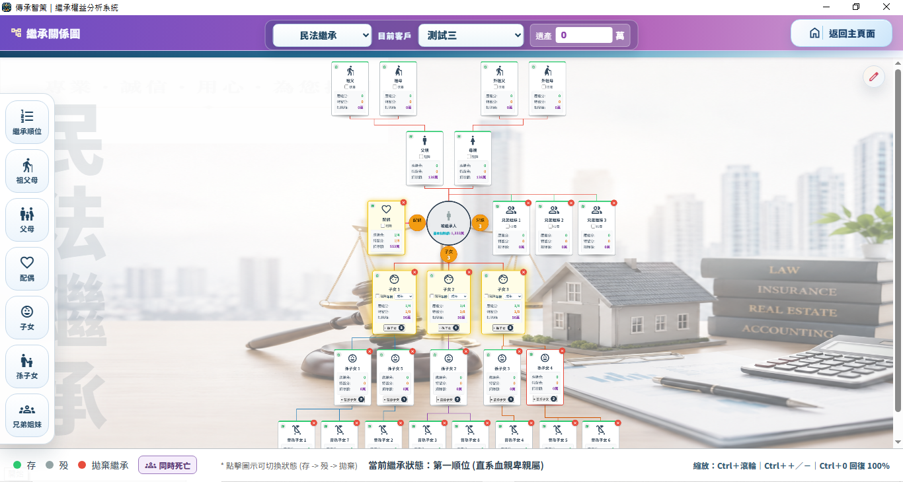
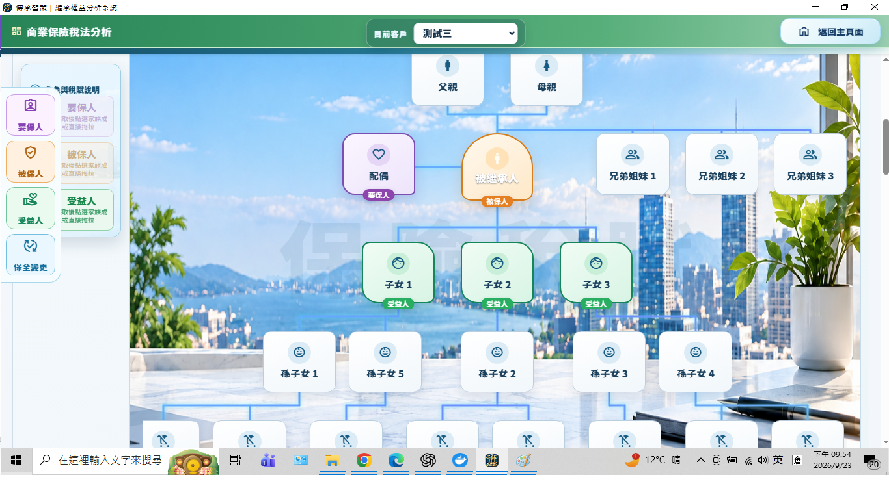

客戶資料
集中整理身分、聯絡、家庭與案件基本資訊，讓服務從正確資料開始。
PROFESSIONAL PLANNING WORKSPACE
先選擇客戶，再由主頁功能卡進入資料整理、繼承關係與各項專業分析。所有說明都以這個工作台作為起點。
畫面為虛擬範例；實際功能會依案件資料、版本與裝置而異。

START HERE
不必一次讀完全部內容；先從主頁上最接近目前案件的功能卡開始。
SYSTEM OVERVIEW
集中整理身分、聯絡、家庭與案件基本資訊，讓服務從正確資料開始。
用圖表與表列呈現不同移轉方式的概略稅費、時間與風險差異。
程式與資料分流；資料包須通過版本、雜湊與簽章驗證。
VISUAL WALKTHROUGH
以下為功能畫面示意，實際內容會依個案資料、版本及裝置而異。

案件入口
先確認目前客戶，再整理身分、聯絡與地址等案件基本資料。

關係整理
用圖形整理家庭成員、繼承角色與下一步需要確認的資料。

保單整理
從保單角色與條件出發，整理保單資訊與下一步需要確認的資料。
三張圖片均由乾淨暫存環境或內建範例條件擷取，不使用客戶真實案件畫面。
DOWNLOAD
目前可供本機驗收的客戶版為 17.0.104：Windows 安裝檔，以及 Android 手機／平板完整工作台 APK。它們僅供以測試資料確認下載、安裝、啟動與基本操作；正式發行檔仍未公開。
此下載只在本機網站提供，尚未上傳 GitHub 或對外公開。Windows SHA-256：F53F7D055AF108636CAD779A1664104EBA02F592F81FD8A24C3331CD1EFF9EA3
Android 為 Debug APK，不能上傳 Google Play。手機 SHA-256：448207D7DF477A8C774FA45289B72ABA8E12E0ED35C6FC87FB36D462D34F44EA；平板 SHA-256：CB126CD7B939EC2947BE9682ACFDF2AFCFD8E6F5DFCC53C00F1BB356F749CAE1
Windows 客戶版、Windows 管理主控版及 Android 測試版用途不同；管理主控版不可交付客戶。
VERIFIED UPDATES
USER GUIDE
從第一次建立客戶、繼承關係、稅務比較到備份與報表，依「用途、準備、步驟、結果、注意」閱讀，不必先記住操作方式。
SUPPORT
先查看平台支援、安裝與更新流程、資料處理與常見問題；請勿在信件中傳送身分證號、完整地址、案件資料或授權碼。
本系統提供資料整理與概略試算，不構成法律、稅務、估價或投資意見。涉及申報、移轉、簽約或重大決策前，請以主管機關資料及適格專業人士意見為準。